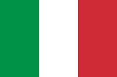

Italy
General Information
Italy is a country consisting of a continental part, delimited by the Alps and a peninsula surrounded by several islands. Italy is located in south-central Europe, and is considered part of western Europe. A unitary parliamentary republic with Rome as its capital, the country covers a total area of 301,340 km2 and shares land borders with France, Switzerland, Austria, Slovenia, and the enclaved microstates of Vatican City and San Marino. Italy has a territorial enclave in Switzerland and a maritime exclave in Tunisian waters. With around 60 million inhabitants, Italy is the third-most populous member state of the European Union.
Across a span of more than 3,000 years, Italian history has been marked by episodes of temporary unification and long separation, of intercommunal strife and failed empires. At peace for more than half a century now, Italy’s inhabitants enjoy a high standard of living and a highly developed culture.
Italy’s political geography has been conditioned by this rugged landscape. With few direct roads between them, and with passage from one point to another traditionally difficult, Italy’s towns and cities have a history of self-sufficiency, independence, and mutual mistrust. Visitors today remark on how unlike one town is from the next, on the marked differences in cuisine and dialect, and on the many subtle divergences that make Italy seem less a single nation than a collection of culturally related points in an uncommonly pleasing setting.
The capital is Rome, one of the oldest of the world’s great cities and a favourite of visitors, who go there to see its great monuments and works of art as well as to enjoy the city’s famed dolce vita, or "sweet life." Other major cities include the industrial and fashion centre of Milan; Genoa, a handsome port on the Ligurian Gulf; the sprawling southern metropolis of Naples; and Venice, one of the world’s oldest tourist destinations. Surrounded by Rome is an independent state, Vatican City, which is the seat of the Roman Catholic Church and the spiritual home of Italy’s overwhelmingly Catholic population. Each of those cities, and countless smaller cities and towns, has retained its differences against the leveling effect of the mass media and standardized education.
The intellectual and moral faculties of humankind have found a welcome home in Italy, one of the world’s most important centres of religion, visual arts, literature, music, philosophy, culinary arts, and sciences.
- Capital: Rome
- Location: South-Central Europe (Apennine Peninsula)
- Climate: Mediterranean climate
- Population: 60 million
- Area: 300000 km2
- Time zone: GMT +1
- Language: Italian
Basic information
The long history of Italy
The history of Italy is characterized by two periods of unity—the Roman Empire (27 BCE–476 CE) and the modern democratic republic formed after the end of World War II. Between those two periods may have been a millennium and a half of division and disruption, but that disruption saw one of the world's great flowering of art, the Renaissance (1400–1600 CE).
Italy, sitting in southwestern Europe, is comprised largely of a boot-shaped peninsula that extends out into the Mediterranean, as well as a region on the core landmass of the continent. It is bordered by Switzerland and Austria to the north, Slovenia and the Adriatic Sea to the east, France and the Tyrrhenian Sea to the west, and the Ionian Sea and the Mediterranean to the south. Italy also includes the islands of Sicily and Sardinia.
Roman Empire
Between the sixth to third centuries BCE, the Italian city of Rome conquered Peninsular Italy; over the next few centuries, this empire spread to dominate the Mediterranean and Western Europe. The Roman Empire would go on to define much of Europe's history, leaving a mark on culture and society that outlasted the military and political machinations of its leadership.
After the Italian part of the Roman Empire declined and “fell” in the fifth century, Italy was the target of several invasions. The previously united region broke apart into several smaller bodies, including the Papal States, governed by the Catholic Pope.
Renaissance and the Kingdom of Italy
By the eighth and ninth centuries, a number of powerful and trading-oriented city-states emerged, including Florence, Venice, and Genoa; these were the forces that incubated the Renaissance. Italy and its smaller states also went through stages of foreign domination. These smaller states were the fertile grounds of the Renaissance, which changed Europe massively once more and owed a lot to the competing states trying to outspend each other on glorious art and architecture.
Unification and independence movements throughout Italy developed ever stronger voices in the 19th century after Napoleon created the short-lived Kingdom of Italy. A war between Austria and France in 1859 allowed several small states to merge with Piedmont; a tipping point had been reached and the Kingdom of Italy was formed in 1861, growing by 1870—when the Papal States joined—to cover almost all of what we now call Italy.
Mussolini and Modern Italy
The Kingdom of Italy was subverted when Mussolini took power as a fascist dictator, and although he was initially skeptical of German dictator Adolf Hitler, Mussolini took Italy into World War II rather than risk losing out on what he perceived as a land grab. That choice caused his downfall. Modern Italy is now a democratic republic and has been since the modern constitution came into effect in 1948. This followed a referendum in 1946, which voted to abolish the previous monarchy by 12.7 million to 10.7 million votes.
Key Rulers
Julius Caesar c. 100 BCE–44 BCE
A great general and statesman, Julius Caesar won a civil war to become both sole ruler of the extensive Roman domains and dictator for life, setting in motion a process of transformation that led to the creation of the Roman Empire. He was assassinated by enemies and is arguably the most famous ancient Roman.
Giuseppe Garibaldi 1807–1882
After exile in South America, forced upon him because of his role in an attempted republican revolution, Guiseppe Garibaldi commanded forces in several Italian conflicts of the 19th century. He played an important role in Italian unification when he and his volunteer army of “Redshirts” captured Sicily and Naples and allowed them to join the Kingdom of Italy.
Benito Mussolini 1883–1945
Mussolini became the youngest-ever prime minister of Italy in 1922, using his fascist organization of “Blackshirts” to propel him to power. He transformed the office into a dictatorship and allied with Hitler’s Germany, but was forced to flee when World War II turned Italy against him. He was captured and executed.
Facts about Italy
- It’s proper name Repubblica Italiana (Italian Republic), Nickname: “Bel Paese” which means beautiful country.
- Rome its capital city was founded in 753BC (over 2700years) and often called "The Eternal City".
- The official language is Italian as well as German and in some regions in Northern Italy.
- Religion is predominantly Christian (Roman Catholics 90%)
- Pizza and Ice cream are both Italian inventions.
- Italian pasta is renowned worldwide and there are more than 200 different shapes.
- Tourists throw €1,000,000 into the Trevi fountain each year
- Italian is a romance language and derives from Latin.
- Venice is a Lagoon City build on islands.
- Florence is home to Italian art.
- Italy is the fifth most visited country in the world.
- Italy surrounds two of the world’s smallest countries-San Marino in Northern Italy, the oldest republic in the world and Vatican City in Rome, the smallest country in the world.
- In the South of Italy you will find Italy’s three active volcanoes: Vesuvius near Naples, Etna on Sicily and Stromboli off the Coast of Italy.
- The highest mountain of Italy can be found in the Alps. It is the Monte Bianco, better known as Mont Blanc, which is 4,807m.
- There are over 1,500 lakes in Italy.